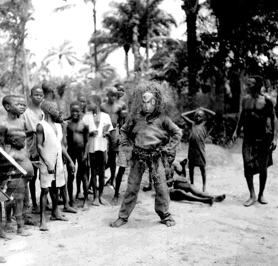

 |
Village
of Umuofia Role Play
|
Now that you have read Things Fall Apart and made a first visit to the Village of Umuofia, you are ready to take on a character and engage in the role play activity.
You teacher will assign you to a character from the list of character roles. Every character is important to the role play activity.
Begin by writing answers to these questions about your character.
What is important to your character?
Which of the other characters does your character most closely relate to? What are these relationships like?
In what part of the village does your character spend most of his or her time?
How does your character view the changes taking place in the village? Why?
At the time set for the role play enter into the Village of Umuofia from the WMU Secondary Worlds website. Login using the username and password assigned to your character. Your character "speaks" when you click on "say," type in text, and hit the "return" key.
Based on the character user name and password your teacher assigns you, you will "wake up" in a particular room as other characters are waking up in the same room. You might begin by spending some time in this room talking with these characters about what the changes taking place in Umuofia and what, if anything, should be done about them. Then, move on to other rooms and conversations with other characters.
What will characters say and do in your Village of Umuofia?
Immediately after the role play is finished, write about what you learned from the activity.
I